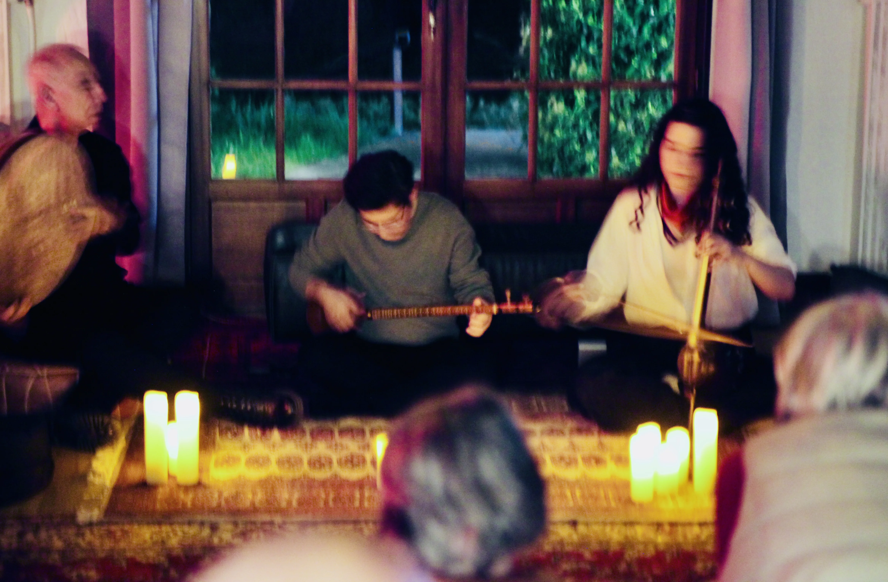
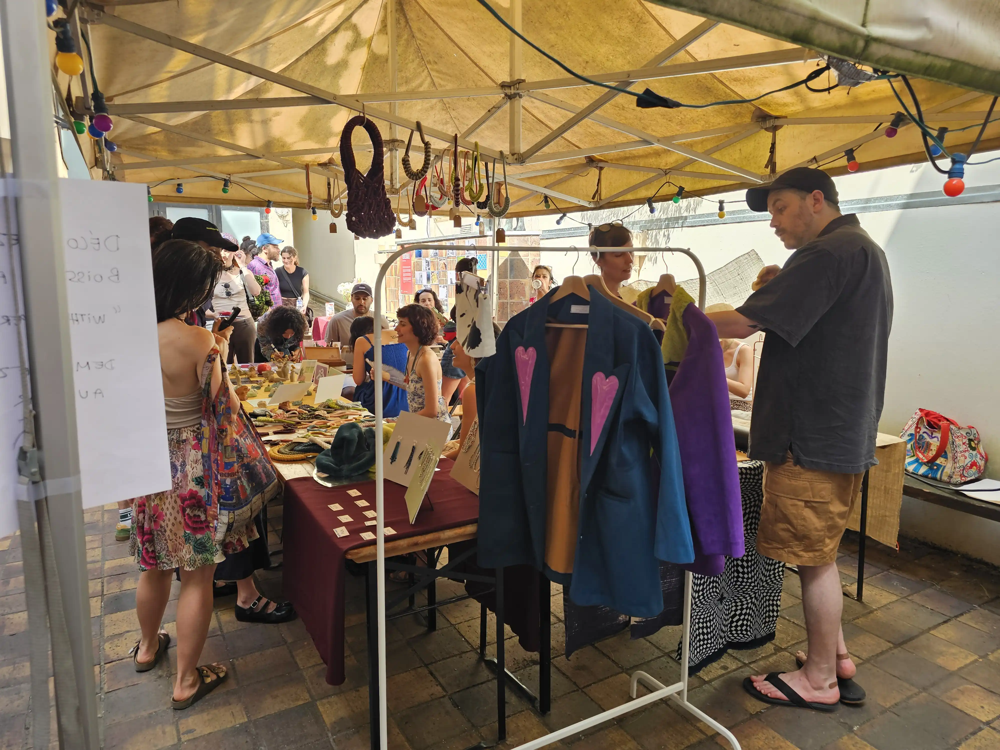

01
Nowruz As Now!
A space for artistic exchange. Project documentation and shared moments.

01
A space for artistic exchange. Project documentation and shared moments.

02
A meeting point for people, objects and shared practices.